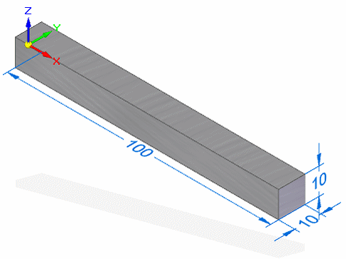

Activity 2: Set the Femap scale factor to match Solid Edge model length units (mm or m)
In this activity you will learn how to import a Solid Edge model defined in millimeters into Femap, and then apply the millimeter scale factor.
You will import the 10x10x100 mm part file you created in the previous activity.

-
This activity requires that you have a separate installation and license for Femap.
-
Femap provides several conversion files (*.cf), which are delivered in the Femap program folder. If you have specific conversion factor needs, these files are a good place to start. You can load them using the Tools→Convert Units→Load command in Femap.
Import Solid Edge files with length units set to millimeters
-
→
Start the Femap program from the desktop or from the Start menu.
Note:Do not use the Tools tab→Environs group→Femap command in Solid Edge to run Femap.
-
Set the conversion units in Femap.
→Choose File→Preferences.
→In the Preferences dialog box, click the Geometry/Model tab.
→From the Solid Geometry Scale Factor list, select 2. Millimeters.
Notice that the scale factor in the box to the right of the list now shows 1000.
Note:This sets the Femap working units to be scaled to match the units in the Solid Edge part model (also millimeters).
It also affects the material properties in the incoming file. Femap converts the material property units to maintain consistency with the metric system standard of millimeters. Units of pressure in the original model are converted to kiloPascals.
Model data units
Equivalent Femap model units (based on millimeter)
Length
millimeter (mm)
Force
milliNewtons (mN)
Mass
kilogram (kg)
Temperature
Centigrade (C)
Stress, pressure
kiloPascals (kPa)
→Close Femap.
-
Import the Solid Edge file.
→Restart Femap.
→From the Femap menu, choose File→Import→Geometry.
→In the Import Geometry dialog box, change the file type to Solid Edge (*.par, *.psm, *.pwd, *.asm).
→Select the file you created in Activity 1—Compare Solid Edge Simulation file units with Femap units, and click Open.
-
Review the material properties.
→In the Model Info pane, review the material properties.
-
Young's Modulus is 68947570. This is consistent with kiloPascals.
-
The density is 2.712E-6, matching kg/mm^3.
→Close Femap without saving the file.
-
Import Solid Edge files with length units set to meters
Assume in the previous example that you set the Solid Geometry Scale Factor to 1. Meters. Also assume that you then try to import the same Solid Edge .par file with the base unit for length set to millimeters.
The following message box is displayed:
OK to Adjust Geometry Scale Factor to Match Value from Part File?
-
In this case, it is best to click No and leave the scale factor in meters. This causes Femap to adjust its unit system to match the actual units (meters) of the incoming Solid Edge .par file.
-
If you click Yes, then this changes the model to meters, such as a 10x10x100 meters, which may not be what you want to see.
This message box is not displayed if the base unit for length is set to meters in the Solid Edge file.